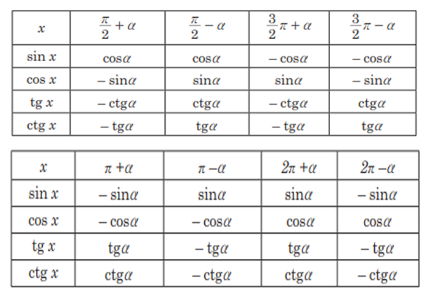

Getirme formulalary.
Sinusyň, kosinusyň, tangensiň we kotangensiň bahalarynyň tablisasy 0º-dan 90º-a çenli burçlar üçin düzülendir. Beýle edilmeginiň sebäbi 90º-dan uly burçlaryň trigonometrik funksiýalarynyň bahalaryny ýiti burçlaryň trigonometrik funksiýalary
arkaly aňladyp bolýar.
+ α;
- α;
+ α;
- α;
2π + α;
2π - α;
görnüşli burçlaryň trigonometrik
funksiýalaryny a burçuň trigonometrik funksiýalary arkaly aň-
lat maga mümkinçilik berýän formulalara getirme formulalary
di ýilýär
sin(
+ α
) = cosα
